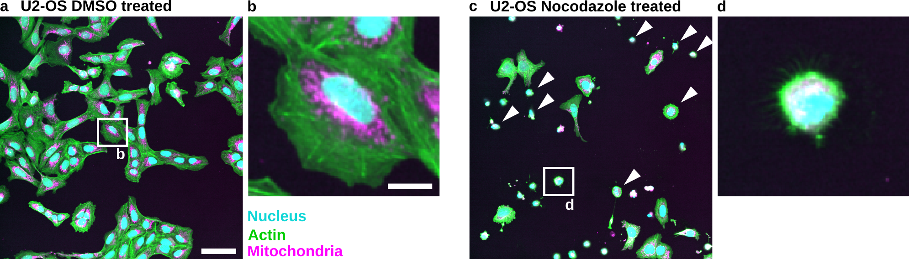
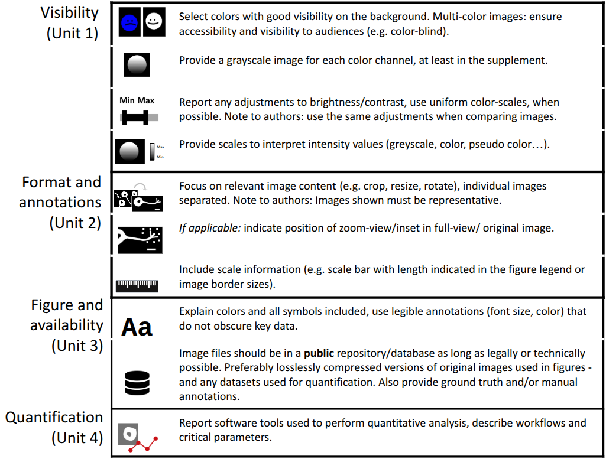

Introduction to course#
This course shows in practice how to create a scientific image figure and how to document it in figure legends and methods.
Course learning objectives#
The overall course objective is to walk through creating one complete image figure from raw data, including the figure legend and the methods used to create, process and analyze the images.
After the course, the learner will be able to produce an image figure from an original microscopy image that truthfully and effectively reports the scientific result that the figure represents (see below).


Fig. 9 Example of an image figure with key annotations provided, such as a scale bar and content including the shown image colors. An enlarged crop is shown next to the overview to focus the viewer on a key result. The origin of the crop is annotated in the overview. Additional annotations, such as white arrowheads, are used to further guide the viewer.#
Scope of course#
It focuses on only the most critical items that affect whether a figure is legible and truthful. The condensed checklist below shows the covered items.
For the complete set of recommendations, see the full set of checklists.

Fig. 10 Condensed checklist.#
Who this course is for#
This course is for anyone who wants to process scientific images, particularly light microscopy images, for visualization in scientific articles, posters, or presentations. We assume you already have a suitable image for visualization. We will not cover image acquisition.
Note
The content is created with microscopy images, specifically light microscopy in mind. The core principles are applicable to other scientific image domains.
Course prerequisites#
This course assumes prior knowledge of microscopy and image acquisition. There should be a basic understanding of what a digital microscopy image is. Specifically, you know what pixels, gray values, and different channels are.
Unit 1 to Unit 3 focus on image visualization. They assume no prior knowledge of image processing.
Unit 4 focuses on documentation of image analysis. Basic image processing and analysis knowledge is needed (e.g., segmentation, thresholding, image filters).
This is a hands-on course with examples you can implement yourself. The principles and instructions apply to your own images.
It uses the freely accessible, open-source tools Fiji and Inkscape.
Overview of teaching units#
The units follow the image processing workflow step by step: adjusting visibility and formatting in Fiji, preparing the figure in Inkscape, and finally describing the methods used for image processing and analysis.
Unit |
Learning objective |
Time |
|
|---|---|---|---|
1. |
Load an example image, adjust colors, brightness, and contrast, and create a merged image, in order to make the information in the image clearly visible to a wide audience and to accurately represent the underlying image content. |
45 min |
|
2. |
Format an image using cropping and rotation, and add key annotations such as scale bars, to clearly and accurately present scientific results. |
25 min |
|
3. |
Create a complete scientific image figure using vector graphics software, adding legible annotations, figure legends, and method descriptions, and make the underlying image data available in a public repository, so that the data and image processing are fully documented and communicated. |
15 min |
|
4. |
Perform a basic quantitative image analysis using an existing tool, document the software, tool versions, and analysis settings used, and identify what needs to be shared (code, settings files, example data) so that custom or existing analyses are transparent and reproducible by others. |
10 min |
Total time for the course is about 1–2 hours. Each teaching unit is self-contained and can be executed individually. The individual tasks performed in each unit can also be followed using the condensed checklist (see Fig. 10).
For more content on image processing ethics and image interpolation, see: Further information.
Materials#
For this tutorial you are going to need:
Fiji is just ImageJ (Fiji): https://fiji.sc/ tested with Version ImageJ 2.18.0/1.54p; Java 21.0.7 (64-bit)
Inkscape: https://inkscape.org/ tested with v1.4.3
The course shown here contains all necessary image data as a download.
Note
We selected Fiji and Inkscape because they are free, open source, and familiar to the authors. The underlying principles can be applied to other tools.
We recommend using the latest versions of these programs.
Further material: Image publication#
BioImaging North America: Figure Making Best Practices
Cheatsheets for creating image figures:
Schmied C. and Jambor HK. Effective image visualization for publications – a workflow using open access tools and concepts [version 2]. F1000Research 2021, 9:1373 (doi: 10.12688/f1000research.27140.2)
Images for the examples were published here:
Wolff C. et al. Morphological profiling data resource enables prediction of chemical compound properties. iScience 2025 (doi: 10.1016/j.isci.2025.112445)
Input, processed, and result images can also be downloaded from a Zenodo repository.
Further material: Image acquisition#
This course assumes that well-acquired images are already available. Image acquisition presents its own challenges and care must be taken to acquire images at appropriate resolution and with proper intensity sampling.
For image acquisition to be reproducible, the materials and methods also need to be documented properly, and each image should be supported by all necessary metadata.
For further information on image acquisition, we have listed some key papers here:
Brown CM. Fluorescence microscopy–avoiding the pitfalls. J Cell Sci. 2007 May 15;120(Pt 10):1703-5. doi: 10.1242/jcs.03433
Pawley J. The 39 steps: a cautionary tale of quantitative 3-D fluorescence microscopy. Biotechniques. 2000 May;28(5):884-6, 888. doi: 10.2144/00285bt01
North AJ. Seeing is believing? A beginners’ guide to practical pitfalls in image acquisition. J Cell Biol. 2006 Jan 2;172(1):9-18. doi: 10.1083/jcb.200507103
Waters JC. Accuracy and precision in quantitative fluorescence microscopy. J Cell Biol. 2009 Jun 29;185(7):1135-48. doi: 10.1083/jcb.200903097
Information for reporting:
Montero Llopis, P., Senft, R.A., Ross-Elliott, T.J. et al. Best practices and tools for reporting reproducible fluorescence microscopy methods. Nat Methods 18, 1463–1476 (2021). https://doi.org/10.1038/s41592-021-01156-w
Further material: Image processing and analysis#
Introduction to bioimage analysis:
Further material: Ethical image processing#
This course gives recommendations on how to perform image processing for good scientific image visualization. We do not directly discuss intentional or misleading image manipulation (e.g., fraudulent duplication or reuse of image data). For considerations on ethical image processing, we have created the section: Ethical image processing.
Further reading on this topic:
Cromey DW. Avoiding twisted pixels: ethical guidelines for the appropriate use and manipulation of scientific digital images. Sci Eng Ethics. 2010 Dec;16(4):639-67. doi: 10.1007/s11948-010-9201-y
Cromey DW. Digital images are data: and should be treated as such. Methods Mol Biol. 2013;931:1-27. doi: 10.1007/978-1-62703-056-4_1
Bik EM, Casadevall A, Fang FC. 2016. The Prevalence of Inappropriate Image Duplication in Biomedical Research Publications. mBio 7. doi: 10.1128/mbio.00809-16
Help#
If you need help, write to the team on image.sc: https://forum.image.sc/tag/quarep.
You can also reach out to the creator of this tutorial: schmiedc